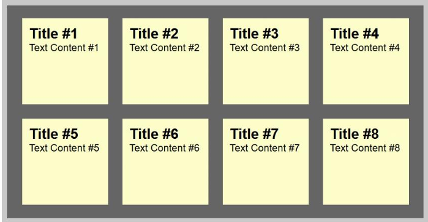

by Chris Heilmann 27 Jan 2021
Difficulty: Intermediate Length: Medium Languages:

In this tutorial, you'll learn how to transform an HTML list into a wall of "sticky notes" that look and work like the following:
The effect is built up gradually and works on all up-to-date browsers like Chrome, Safari, Firefox, and Opera. Older browsers simply get some yellow squares.
We will be using some common CSS properties that work across all browsers. As we are using HTML5 for the effect, the basic HTML of our sticky notes is an unordered list with a link containing all the other
Now it's time to add a drop shadow to the notes to make them stand out and to use a scribbly, hand-written font as the note font. For this we use Google Fonts and the fonts they provide us with, called "Reenie Beanie" and "Lato".
Both the tilting of the notes and the zooming we'll add in the next step were already explained in the past, in this article by Zurb. So big thanks to them for publishing this trick.
In order to tilt an element, you use the transform:rotate property of CSS3, again adding the prefix for each of the browsers:
Apple never showed intentions of racing the Nexus 7 to the bottom in the tablet game, and the iPhone 5c is proof that it won't do that in the phone arena, either.
Kebudayaan Indonesia yang multikultur seperti itu, ketika dikaji dari sisi dimensi waktu, dapat dibagi pula pengertiannya :
Adapun Pengaruh Positif dapat berupa :
| FEEDBACK | ||
|---|---|---|
| Nama | : | |
| : | ||
| Jenis Kelamin | : |
Laki-laki Perempuan |
| Golongan | : | |
| Kemampuan | : |
Bahasa
Olahraga Fisik Agama |
| Testimoni | : | |
| JANUARI | TOTAL | FEBRUARI | TOTAL | KELUAR | TOTAL | |
|---|---|---|---|---|---|---|
| MASUK | MASUK | JANUARI | FEBRUARI | |||
| Sub Total 1 | ||||||
| Sub Total 2 | ||||||
| TOTAL | ||||||